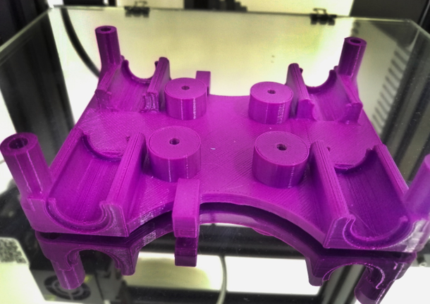
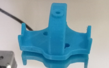
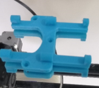
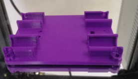
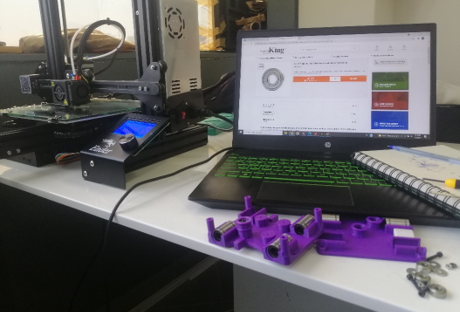
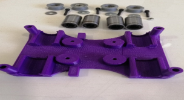
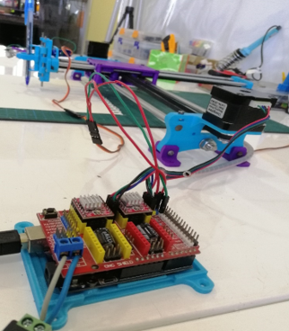
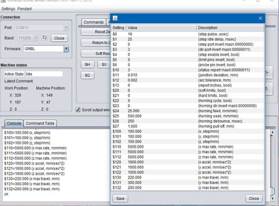
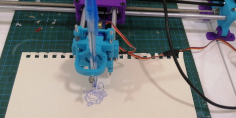

3-Axis DrawingBot
Description
Core XY Drawing-Bot which is designed to draw specific vector lines obtained from any image. It took approximately 35 hours of 3D printing time to make the parts. The Bot is powered by GRBL firmware through Arduino which enables motion control for CNC machines.
Tasks
- Designing and 3D printing the plastic parts of the Bot.




- Assembly of the mechanical parts (Axis-Belts-Bearings-Screws) with the 3D printed parts.


- Attaching the servo motor to the pen holder and the stepper motors to the belt and connecting them the motor driver connected to an Arduino microcontroller.

- For the software part Grbl servo master was used to control the motion of the motors, in addition to MI Inkscape Extension to convert the picture into vector lines then to G-code to send it to the Grbl code implanted in the Arduino which is configured with a Universal Gcode sender to control it.

- The result was a high accurate drawing bot capable to draw any picture on a horizontal surface plate.
